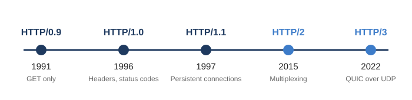

History of HTTP
HTTP was created at CERN as the simplest possible way to fetch a document by its address. Over the next six years it grew into the protocol that ran the web for two decades.

Origins: Tim Berners-Lee and CERN (1989-1991)
In the late 1980s, CERN (the European physics lab near Geneva) had thousands of researchers using different computers and file formats, so finding information was hard. Tim Berners-Lee, a British software engineer at CERN, wanted a simple way to link documents stored on different computers.
He invented three technologies that are still the core of the Web:
- URL - a universal address for every resource on the Web.
- HTML - the language used to write web pages and links.
- HTTP - the protocol that fetches a resource named by a URL.
Key dates
- March 1989: Berners-Lee writes "Information Management: A Proposal".
- 1990: he builds the first web browser (WorldWideWeb), the first web server, and HTML on a NeXT computer.
- August 1991: the WWW software is announced publicly.
- 1993: the Mosaic browser makes the Web popular with inline images. On 30 April 1993 CERN puts the Web software in the public domain.
- October 1994: Berners-Lee founds the World Wide Web Consortium (W3C).
HTTP/0.9 (1991): The One-Line Protocol
The first version had no official number. It was called HTTP/0.9 later to tell it apart from HTTP/1.0. A complete request was just one line:
GET /hello.htmlThe server replied with raw HTML and then closed the connection. It could only use the GET method and only send HTML text. There were no headers and no status codes, so errors were just HTML text that a program could not reliably detect. Once Mosaic showed images and people wanted forms, HTTP needed more.
HTTP/1.0 (1996): Headers, Status Codes, Content Types
HTTP/1.0 was described in RFC 1945 (May 1996) by Tim Berners-Lee, Roy Fielding, and Henrik Frystyk Nielsen. It documented what browsers and servers were already doing. New features included:
- A version number in the request line (
GET / HTTP/1.0). - Headers on both requests and responses.
- Status codes such as 200, 404, and 500.
- Content-Type, so servers could send images, audio, video and other files.
- New methods HEAD and POST, which made web forms possible.
The weakness was that the connection was still closed after each response. A page with ten images needed eleven separate TCP connections, each with its own handshake.
HTTP/1.1 (1997): The Version That Ran the Web
HTTP/1.1 fixed many of these problems and stayed the main version for almost twenty years. Its main features were:
- Persistent connections: many requests can reuse one TCP connection.
- Mandatory Host header: one server can host many websites.
- Chunked transfer: a server can start sending before it knows the total size.
- Better caching: Cache-Control, ETag, and conditional requests.
- Range requests: ask for part of a file, which allows resuming downloads.
- More methods (PUT, DELETE, OPTIONS).
The standard was revised several times: RFC 2068 (1997), RFC 2616 (1999), RFC 7230-7235 (2014), and RFC 9110-9112 (2022). Roy Fielding, one of its authors, also described REST in his 2000 dissertation, which is the design style behind most web APIs today.
Why HTTP/1.1 Was Not Enough
Web pages grew from a few files in 1996 to dozens or hundreds of files. On one HTTP/1.1 connection, each response must finish before the next one starts. This is called head-of-line blocking. For example, if a big image is requested before a small JavaScript file, the small file has to wait behind the image.
Browsers worked around this by opening about six connections per site, and developers invented tricks like image sprites, combining files together, and spreading files across several domain names. These tricks made sites harder to maintain, and around 2009 Google engineers decided the protocol itself needed to change. That story continues on the Modern HTTP page.